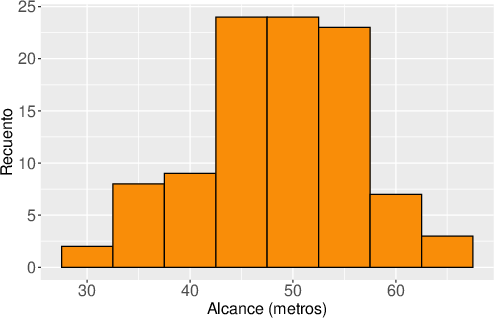

Comenzamos realizando un histograma para nuestros datos. Como en la práctica anterior, no es necesario que entiendas al detalle el siguiente código, sólo ejecútalo para ver el resultado. Luego lee las explicaciones posteriores, que son suficientes para saber cómo retocar el código para representar otros datos.

Como se explicó en la práctica anterior, la función ggplot determina la estructura del gráfico, creando el marco de partida para añadir el resto de elementos. En este caso crea un gráfico con los valores de la variable alcance en el eje .
Del eje se ocupa la función geom_histogram. Esta función divide el eje en varios intervalos de la misma longitud, la indicada por el valor del argumento binwidth, en nuestro caso de longitud . Y para cada intervalo dibuja una barra de altura igual al número de observaciones que caen en ese intervalo.
Los elementos del código anterior que habría que cambiar para crear el histograma asociado otros datos son: